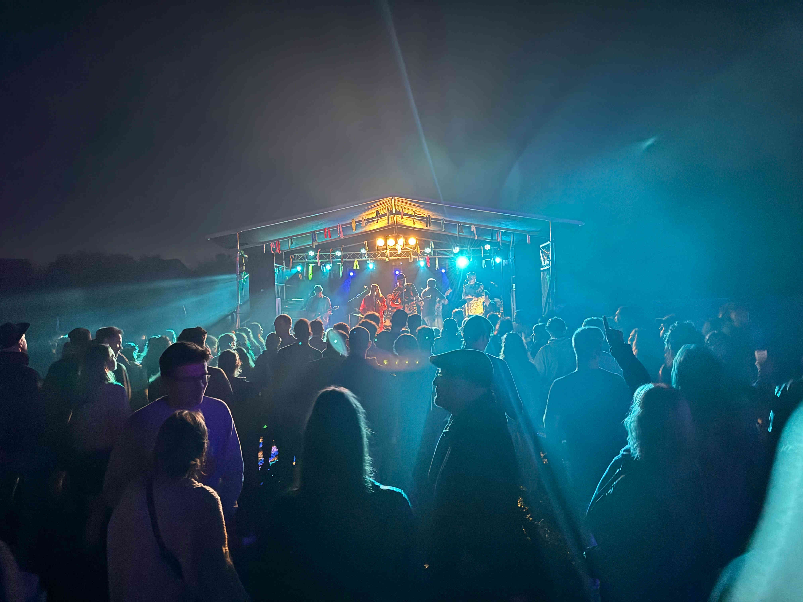
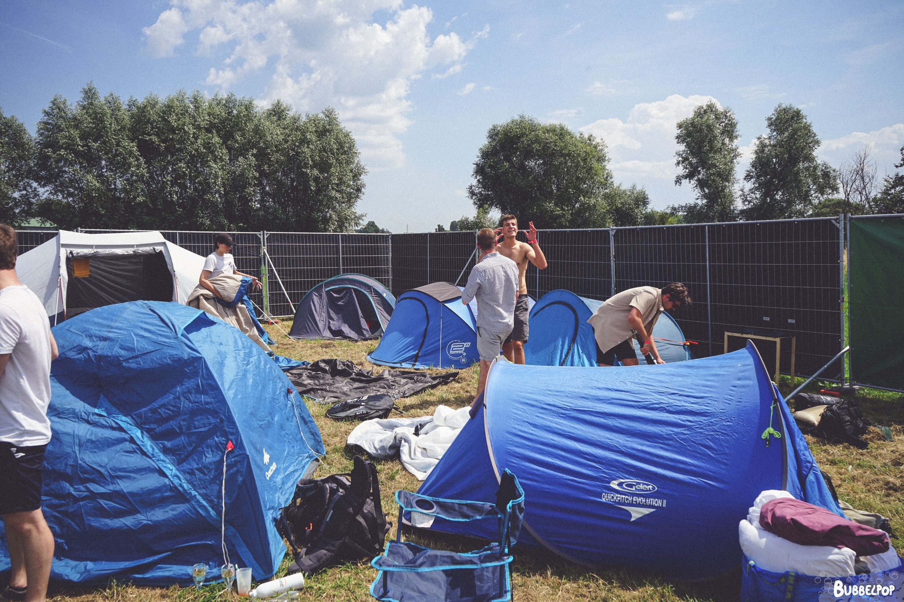
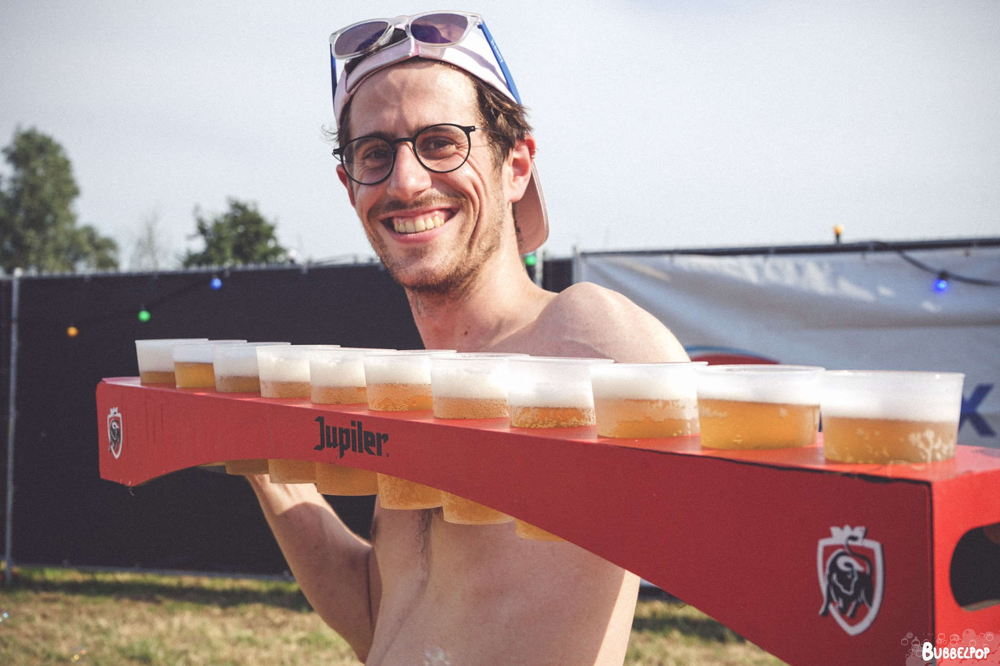

Bubbelpop 2025 gaat door op vrijdag 11 juli en zaterdag 12 juli. Je kan tijdens deze tweedaagse opnieuw genieten van talloze live-bands, dj-sets, silent disco en overheerlijk eten in combinatie met een lekker fris drankje.
Heb jij jouw tickets al? Wave 1 is ondertussen volledig uitverkocht maar er zijn nog steeds tickets beschikbaar in wave twee! Wees er snel bij want de beschikbaarheid is gelimiteerd.
Wil je op de hoogte blijven van de laatste ontwikkelingen? Schrijf je in via dit formulier op onze nieuwsbrief. Of volg onze pagina's op Facebook en Instagram.

Camping
Voor festivalgangers die van ver komen of voor feestvierders die niet te ver naar hun bedje willen lopen, is er plaats om te kamperen.

Dit is volledig gratis. Het enige dat je zelf moet meebrengen, is je tent en slaapgerief! Eigen drank en het koken van voedsel is niet toegestaan op de camping .
boef & booze
Op het vlak van drank kan je bij ons terecht aan een wijde variatie van alcoholische en niet-alcoholische dranken. Gedurende het festival werken we ook met enkele tijdsloten waarbij een cocktail enkel tijdens deze periode in promo te verkrijgen is. Op tijd komen dus! Want bij de promo geldt: op = op!

Ook qua eten voorzien wij een ruim aanbod waarbij telkens een vegetarisch alternatief beschikbaar is. Denk aan frietjes met stoofvlees, Julientjes op Overpoortse wijze, heerlijke hamburgers en voor de kleine honger een croque italiano uit het vuistje.